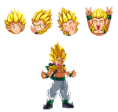

Activate Super Saiyan 2 Mode (Lv2)
Gotenks gets cocky!
He transforms to Super Saiyan 2 and gets buffed up! Damage and defense increase and
all basics get changed in some way, whether it's hit/hurtboxes or speed.
And as expected, SSJ3 Beatdown costs Lvl2 instead of Lvl3 (but you still get a full Lvl3
power bar that acts as your SSJ3 timer) and gets Finisher at the end of it.
You gain two bars; a power bar (top, yellow) and a Finisher bar (red, bottom). The power bar is great; you actually gain 3 power bars. So if you just keep powering up, combined with your default power bars, you can get up to 6 full power bars. Then you have more then enough stock to dish out some major damage!
The Finisher bar manages which Finisher will be played once you've managed to knock the enemy into the Dimensional Portal in SSJ3 mode. This Finisher bar fills up by doing specific actions:
-Being in Hero Pose.
-Being in Spin Spin Pose.
-Taunting. Taunting while having Ghost Bros gives a greater amount!
-Performing Insults.
Unlike any other character, Gotenks remains in his SSJ2 mode after performing his Finisher.
You gain two bars; a power bar (top, yellow) and a Finisher bar (red, bottom). The power bar is great; you actually gain 3 power bars. So if you just keep powering up, combined with your default power bars, you can get up to 6 full power bars. Then you have more then enough stock to dish out some major damage!
The Finisher bar manages which Finisher will be played once you've managed to knock the enemy into the Dimensional Portal in SSJ3 mode. This Finisher bar fills up by doing specific actions:
-Being in Hero Pose.
-Being in Spin Spin Pose.
-Taunting. Taunting while having Ghost Bros gives a greater amount!
-Performing Insults.
Unlike any other character, Gotenks remains in his SSJ2 mode after performing his Finisher.

Super Taunt
Even exiting his SSJ2 mode is done in a flashy and entertaining manner!
Take a seat, Dan! By performing this Exit move, all current Finisher Bar filling will be converted to Power Bar.